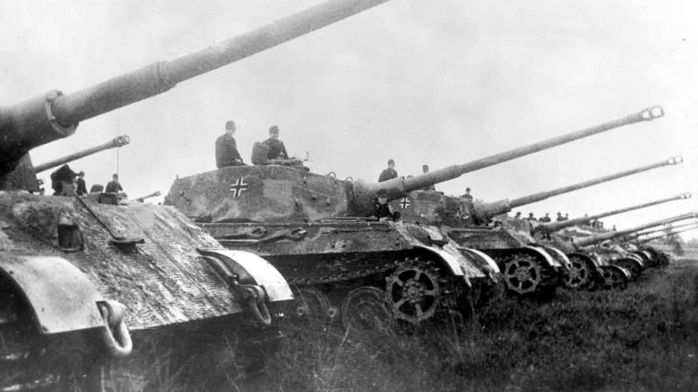
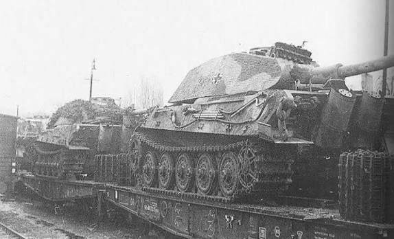
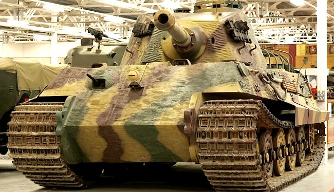
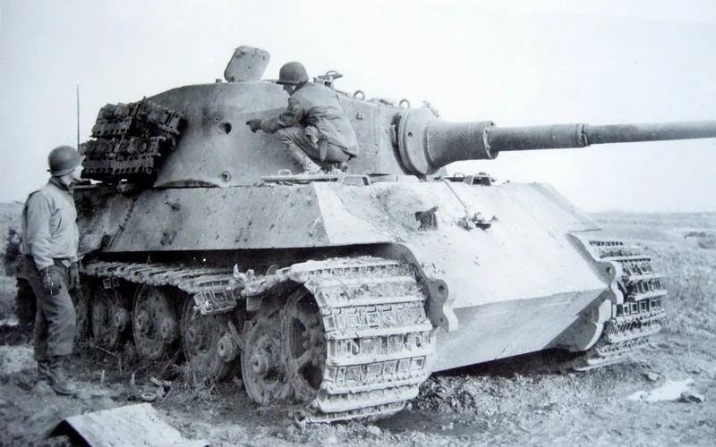
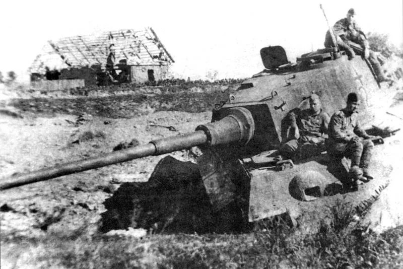

Tiger II (King Tiger)
Giới thiệu
Tiger II, còn được gọi là Königstiger hoặc King Tiger, là mẫu xe tăng hạng nặng mạnh nhất từng được Đức đưa vào sản xuất hàng loạt trong Thế chiến II. Xe kết hợp hỏa lực của pháo 88 mm KwK 43 L/71 với thiết kế giáp nghiêng lấy cảm hứng từ Panther.
Được đưa vào chiến đấu từ giữa năm 1944, Tiger II có khả năng tiêu diệt hầu hết xe tăng Đồng Minh ở cự ly rất xa, trong khi giáp trước của xe gần như miễn nhiễm với nhiều loại pháo tăng thời kỳ đó.
Lịch sử phát triển
Sau thành công của Tiger I và Panther, Đức muốn tạo ra một mẫu xe tăng hạng nặng mới có giáp nghiêng dày hơn nhưng vẫn giữ được hỏa lực cực mạnh.
Tiger II được Henschel phát triển với hai kiểu tháp pháo khác nhau: tháp Porsche và tháp Henschel. Phần lớn xe được sản xuất sử dụng tháp Henschel vì dễ chế tạo hơn và có khả năng bảo vệ tốt hơn.
Thông số kỹ thuật
| Quốc gia | Đức |
|---|---|
| Tên đầy đủ | Panzerkampfwagen Tiger Ausf.B |
| Loại | Xe tăng hạng nặng |
| Khối lượng | Khoảng 69,8 tấn |
| Kíp lái | 5 người |
| Động cơ | Maybach HL230 P30 V12 |
| Công suất | 700 mã lực |
| Tốc độ tối đa | Khoảng 41 km/h |
| Tầm hoạt động | Khoảng 170 km |
| Giáp | 40–185 mm |
Vũ khí
Tiger II được trang bị pháo 88 mm KwK 43 L/71, một trong những khẩu pháo xe tăng mạnh nhất từng được đưa vào chiến đấu trong Thế chiến II. Với nòng pháo dài và sơ tốc đầu đạn rất cao, Tiger II có thể tiêu diệt phần lớn xe tăng Đồng Minh từ khoảng cách trên 2.000 mét trong điều kiện thuận lợi.
- Pháo chính: 88 mm KwK 43 L/71.
- Cơ số đạn: khoảng 80 viên.
- Súng máy MG34 đồng trục 7,92 mm.
- Súng máy MG34 phía trước thân xe.
- Một số xe được trang bị súng máy phòng không trên nóc tháp pháo.
Ưu điểm
- Pháo 88 mm KwK 43 có khả năng xuyên giáp cực mạnh.
- Giáp trước rất dày kết hợp thiết kế giáp nghiêng.
- Độ chính xác cao ở khoảng cách xa.
- Khả năng phòng thủ gần như vượt trội trước nhiều xe tăng Đồng Minh.
- Tạo ưu thế lớn trong các trận đấu tăng trực diện.
Nhược điểm
- Khối lượng gần 70 tấn khiến khả năng cơ động hạn chế.
- Tiêu hao nhiên liệu rất lớn.
- Hệ thống truyền động và hộp số thường gặp sự cố.
- Khó vượt cầu và khó vận chuyển bằng đường sắt.
- Sản xuất phức tạp, số lượng chế tạo không nhiều.
Các trận đánh tiêu biểu
Normandy (1944)
Một số Tiger II đầu tiên xuất hiện tại Normandy. Dù số lượng ít nhưng đã thể hiện sức mạnh vượt trội trong các cuộc đấu tăng.
Ardennes (1944)
Trong Trận Bulge, Tiger II là lực lượng chủ lực của nhiều đơn vị thiết giáp Đức. Xe gây nhiều thiệt hại cho Đồng Minh nhưng thường bị bỏ lại do thiếu nhiên liệu hoặc hỏng hóc cơ khí.
Hungary (1945)
Tiger II tham gia Chiến dịch Frühlingserwachen nhằm bảo vệ các mỏ dầu cuối cùng của Đức. Đây là một trong những lần triển khai quy mô lớn cuối cùng của loại xe này.
Berlin (1945)
Trong giai đoạn cuối chiến tranh, Tiger II được sử dụng để phòng thủ Berlin. Phần lớn xe bị phá hủy hoặc bị kíp lái tự đánh hỏng trước khi đầu hàng.
Đánh giá tổng quan
Tiger II được nhiều nhà nghiên cứu đánh giá là xe tăng hạng nặng mạnh nhất được đưa vào sản xuất hàng loạt trong Thế chiến II. Hỏa lực mạnh, giáp dày và khả năng bắn chính xác khiến xe trở thành đối thủ đáng gờm đối với mọi lực lượng thiết giáp Đồng Minh.
Tuy nhiên, khối lượng quá lớn, chi phí sản xuất cao và độ tin cậy cơ khí chưa tốt khiến Tiger II không thể tạo ra ảnh hưởng chiến lược như kỳ vọng của Đức.
Thư viện ảnh



